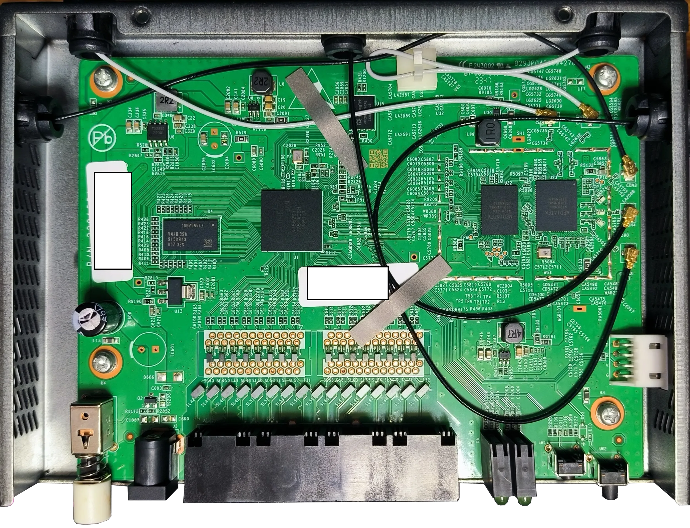

路由器型号：AX3000
OEM 型号：SDG320
方案：EN7562CT+MT7976DN+MT7916AN
拆机 
开 SSH/telnet/CONSOLE 暂不提供
下载解锁配置 里面的内容会覆盖路由器的配置文件，包括mac地址等信息，非必要不要导入，而是自己手动修改配置文件。
下载 提示：
1 2 3 4 5 6 7 8 9 10 11 12 13 14 15 CMCCAdmin # 默认高级用户 aDm8H%MdA # 明文密码 zen325unp33NjYcWsWs7lg== root # ssh、console 用户 I5VxONG+0Xr0u04b+WYl90zks3WSQPXwiwgGJJGdwDY= admin # telnet 用户 Y//BIb1hWT4x77mBr5nGsA== user3 # 普通用户 Y//BIb1hWT4x77mBr5nGsA== useradmin # 普通用户 eDncCx5f5RrT0hFE7E7ZNQ==
当然，这个是我这台机器上的密码，如果你有其他的机器，可能会有不同的密码。加密方式多层加密。
截获的系统信息 1 2 3 4 5 6 7 8 9 10 11 12 13 14 15 16 17 18 19 20 21 22 23 24 25 26 27 28 29 30 31 32 33 34 35 36 37 38 39 40 41 42 43 44 45 46 47 48 49 50 51 52 53 54 55 56 57 58 59 60 61 62 63 64 65 66 67 68 69 70 71 72 73 74 75 76 77 78 79 80 81 82 83 84 85 86 87 88 89 90 91 92 93 94 95 96 97 98 99 100 101 102 103 104 105 106 107 108 109 110 111 112 113 114 115 116 117 118 119 120 121 122 123 124 125 126 127 128 129 130 131 132 133 134 135 136 137 138 139 140 141 142 143 144 145 146 147 148 149 150 151 152 153 154 155 156 157 158 159 160 161 162 163 164 165 166 167 168 169 170 171 172 173 174 175 176 177 178 179 180 181 182 183 184 185 186 187 188 189 190 191 192 193 194 195 196 197 198 199 200 201 202 203 204 205 206 207 208 209 210 211 212 213 214 215 216 217 218 219 220 221 222 223 224 225 226 227 228 229 230 231 232 233 234 235 236 237 238 239 240 241 242 243 244 245 246 247 248 249 250 251 252 253 254 255 256 257 258 259 260 261 262 263 264 265 266 267 268 269 270 271 272 273 274 275 276 277 278 279 280 281 282 283 284 285 286 287 288 289 290 291 292 293 294 295 296 297 298 299 300 301 302 303 304 305 306 307 308 309 310 311 312 313 314 315 316 317 318 319 320 321 322 323 324 # cat /proc/version Linux version 5.4.55 (root@compile168) (gcc version 10.3.0 (Buildroot -g413d1bb)) #1 SMP Fri Nov 10 16:05:51 CST 2023 # cat /proc/buddyinfo Node 0, zone Normal 140 96 31 15 5 4 4 6 3 2 55 # cat /proc/cpu /proc/cpu/ /proc/cpuinfo /proc/cpupower # cat /proc/cpuinfo processor : 0 model name : ARMv7 Processor rev 4 (v7l) BogoMIPS : 50.00 Features : half thumb fastmult edsp tls idiva idivt lpae evtstrm crc32 CPU implementer : 0x41 CPU architecture: 7 CPU variant : 0x0 CPU part : 0xd03 CPU revision : 4 processor : 1 model name : ARMv7 Processor rev 4 (v7l) BogoMIPS : 50.00 Features : half thumb fastmult edsp tls idiva idivt lpae evtstrm crc32 CPU implementer : 0x41 CPU architecture: 7 CPU variant : 0x0 CPU part : 0xd03 CPU revision : 4 Hardware : ECONET (Device Tree) Revision : 0000 Serial : 0000000000000000 # cat /proc/pagetypeinfo Page block order: 10 Pages per block: 1024 Free pages count per migrate type at order 0 1 2 3 4 5 6 7 8 9 10 Node 0, zone Normal, type Unmovable 22 35 5 5 3 0 1 1 1 0 0 Node 0, zone Normal, type Movable 207 34 6 5 1 3 3 4 2 1 55 Node 0, zone Normal, type Reclaimable 6 3 2 1 1 1 0 1 0 1 0 Node 0, zone Normal, type HighAtomic 0 0 0 0 0 0 0 0 0 0 0 Number of blocks type Unmovable Movable Reclaimable HighAtomic Node 0, zone Normal 37 87 2 0 # cat /proc/device-tree/ cat: Read error: Is a directory # cat /proc/device-tree/ /proc/device-tree/\#address-cells /proc/device-tree/pon_hsgmii@1fa65000/ /proc/device-tree/\#size-cells /proc/device-tree/pon_phy@1faf0000/ /proc/device-tree/apb_timer1@1fbf0100/ /proc/device-tree/psci/ /proc/device-tree/chosen/ /proc/device-tree/rbus@1fa00000/ /proc/device-tree/compatible /proc/device-tree/reserved-memory/ /proc/device-tree/cpu_top@1efb0000/ /proc/device-tree/scu@1fb00000/ /proc/device-tree/cpus/ /proc/device-tree/serial@1fbf0000/ /proc/device-tree/crypto_k@1fb70000/ /proc/device-tree/serial@1fbf0300/ /proc/device-tree/dma-controller@1fa01800/ /proc/device-tree/sgmii_p0@1fa72000/ /proc/device-tree/frame_engine@1fb50000/ /proc/device-tree/sgmii_p1@1fa77000/ /proc/device-tree/gdma@1fb30000/ /proc/device-tree/sgmii_u0@1fa81000/ /proc/device-tree/gdump@1fbf9000/ /proc/device-tree/snor/ /proc/device-tree/gpio@1fbf0200/ /proc/device-tree/spi_controller@1fa10000/ /proc/device-tree/i2c@1fbf8000/ /proc/device-tree/spi_ecc@1fa12000/ /proc/device-tree/i2c_slave@1fbe3300/ /proc/device-tree/spi_spi2nfi@1fa11000/ /proc/device-tree/i2s@1fbe2200/ /proc/device-tree/sram@1fa40000/ /proc/device-tree/interrupt-controller@09000000/ /proc/device-tree/thermal_phy@1efbd000/ /proc/device-tree/interrupt-parent /proc/device-tree/timer/ /proc/device-tree/mdio-bus/ /proc/device-tree/trng@1faa1000/ /proc/device-tree/memory@80000000/ /proc/device-tree/usb_phy@1fad0000/ /proc/device-tree/name /proc/device-tree/wdma/ /proc/device-tree/nand@1fa10000/ /proc/device-tree/wed/ /proc/device-tree/npu@1e800000/ /proc/device-tree/wed2/ /proc/device-tree/pcie@0x1fa91000/ /proc/device-tree/wed_test/ /proc/device-tree/pcie_phy@1fa93700/ /proc/device-tree/xhci@1fab0000/ /proc/device-tree/pcm@bfbd0000/ /proc/device-tree/xpon@1fb64000/ /proc/device-tree/pmu/ /proc/device-tree/xsi@1fa60000/ # cat /proc/meminfo MemTotal: 476444 kB MemFree: 240064 kB MemAvailable: 299452 kB Buffers: 14452 kB Cached: 70292 kB SwapCached: 0 kB Active: 44232 kB Inactive: 45744 kB Active(anon): 21248 kB Inactive(anon): 768 kB Active(file): 22984 kB Inactive(file): 44976 kB Unevictable: 15912 kB Mlocked: 0 kB HighTotal: 0 kB HighFree: 0 kB LowTotal: 476444 kB LowFree: 240064 kB SwapTotal: 0 kB SwapFree: 0 kB Dirty: 0 kB Writeback: 0 kB AnonPages: 21196 kB Mapped: 13600 kB Shmem: 872 kB KReclaimable: 5368 kB Slab: 78776 kB SReclaimable: 5368 kB SUnreclaim: 73408 kB KernelStack: 1600 kB PageTables: 1248 kB NFS_Unstable: 0 kB Bounce: 0 kB WritebackTmp: 0 kB CommitLimit: 238220 kB Committed_AS: 257240 kB VmallocTotal: 507904 kB VmallocUsed: 21504 kB VmallocChunk: 0 kB Percpu: 256 kB # cat /proc/misc 229 fuse 63 cpu_dma_latency 129 wdog3 128 wdog2 127 wdog1 126 wdog0 130 watchdog # cat /proc/mtd dev: size erasesize name mtd0: 00080000 00020000 "bootloader" mtd1: 00c00000 00020000 "rescue" mtd2: 00140000 00020000 "reservearea" mtd3: 00040000 00020000 "romfile" mtd4: 00500000 00020000 "kernela" mtd5: 02100000 00020000 "rootfsa" mtd6: 00500000 00020000 "kernelb" mtd7: 02100000 00020000 "rootfsb" mtd8: 00600000 00020000 "data" mtd9: 03200000 00020000 "java" mtd10: 04e00000 00020000 "osgi" # cat /proc/slabinfo slabinfo - version: 2.1 # name <active_objs> <num_objs> <objsize> <objperslab> <pagesperslab> : tunables <limit> <batchcount> <sharedfactor> : slabdata <active_slabs> <num_slabs> <sharedavail> fuse_request 0 0 104 39 1 : tunables 0 0 0 : slabdata 0 0 0 fuse_inode 0 0 576 14 2 : tunables 0 0 0 : slabdata 0 0 0 RAWv6 36 36 896 18 4 : tunables 0 0 0 : slabdata 2 2 0 tw_sock_TCPv6 0 0 200 20 1 : tunables 0 0 0 : slabdata 0 0 0 request_sock_TCPv6 0 0 240 17 1 : tunables 0 0 0 : slabdata 0 0 0 TCPv6 34 34 1920 17 8 : tunables 0 0 0 : slabdata 2 2 0 nf_conntrack_expect 0 0 152 26 1 : tunables 0 0 0 : slabdata 0 0 0 nf_conntrack 214 288 256 16 1 : tunables 0 0 0 : slabdata 18 18 0 sgpool-128 12 12 2560 12 8 : tunables 0 0 0 : slabdata 1 1 0 sgpool-64 12 12 1280 12 4 : tunables 0 0 0 : slabdata 1 1 0 sgpool-16 12 12 320 12 1 : tunables 0 0 0 : slabdata 1 1 0 mqueue_inode_cache 12 12 640 12 2 : tunables 0 0 0 : slabdata 1 1 0 ovl_inode 0 0 448 18 2 : tunables 0 0 0 : slabdata 0 0 0 jffs2_refblock 736 736 248 16 1 : tunables 0 0 0 : slabdata 46 46 0 jffs2_full_dnode 1280 1280 16 256 1 : tunables 0 0 0 : slabdata 5 5 0 jffs2_i 162 162 440 18 2 : tunables 0 0 0 : slabdata 9 9 0 ntfs_big_inode_cache 0 0 640 12 2 : tunables 0 0 0 : slabdata 0 0 0 ntfs_inode_cache 0 0 200 20 1 : tunables 0 0 0 : slabdata 0 0 0 ntfs_name_cache 0 0 512 16 2 : tunables 0 0 0 : slabdata 0 0 0 fat_inode_cache 0 0 488 16 2 : tunables 0 0 0 : slabdata 0 0 0 fat_cache 0 0 24 170 1 : tunables 0 0 0 : slabdata 0 0 0 squashfs_inode_cache 3312 3312 448 18 2 : tunables 0 0 0 : slabdata 184 184 0 jbd2_transaction_s 0 0 192 21 1 : tunables 0 0 0 : slabdata 0 0 0 jbd2_journal_head 0 0 64 64 1 : tunables 0 0 0 : slabdata 0 0 0 ext2_inode_cache 0 0 544 15 2 : tunables 0 0 0 : slabdata 0 0 0 ext4_inode_cache 0 0 720 22 4 : tunables 0 0 0 : slabdata 0 0 0 ext4_allocation_context 0 0 104 39 1 : tunables 0 0 0 : slabdata 0 0 0 ext4_prealloc_space 0 0 72 56 1 : tunables 0 0 0 : slabdata 0 0 0 ext4_io_end 0 0 48 85 1 : tunables 0 0 0 : slabdata 0 0 0 ext4_pending_reservation 0 0 16 256 1 : tunables 0 0 0 : slabdata 0 0 0 ext4_extent_status 0 0 32 128 1 : tunables 0 0 0 : slabdata 0 0 0 mbcache 0 0 40 102 1 : tunables 0 0 0 : slabdata 0 0 0 kioctx 0 0 448 18 2 : tunables 0 0 0 : slabdata 0 0 0 dio 0 0 384 21 2 : tunables 0 0 0 : slabdata 0 0 0 pid_namespace 0 0 112 36 1 : tunables 0 0 0 : slabdata 0 0 0 posix_timers_cache 0 0 184 22 1 : tunables 0 0 0 : slabdata 0 0 0 ip4-frags 0 0 136 30 1 : tunables 0 0 0 : slabdata 0 0 0 RAW 42 42 768 21 4 : tunables 0 0 0 : slabdata 2 2 0 UDP 36 36 896 18 4 : tunables 0 0 0 : slabdata 2 2 0 tw_sock_TCP 20 20 200 20 1 : tunables 0 0 0 : slabdata 1 1 0 request_sock_TCP 85 85 240 17 1 : tunables 0 0 0 : slabdata 5 5 0 TCP 54 54 1792 18 8 : tunables 0 0 0 : slabdata 3 3 0 eventpoll_pwq 408 408 40 102 1 : tunables 0 0 0 : slabdata 4 4 0 request_queue 36 36 1344 12 4 : tunables 0 0 0 : slabdata 3 3 0 biovec-max 60 60 3072 10 8 : tunables 0 0 0 : slabdata 6 6 0 biovec-128 0 0 1536 21 8 : tunables 0 0 0 : slabdata 0 0 0 biovec-64 42 42 768 21 4 : tunables 0 0 0 : slabdata 2 2 0 user_namespace 0 0 344 23 2 : tunables 0 0 0 : slabdata 0 0 0 dmaengine-unmap-256 15 15 1088 15 4 : tunables 0 0 0 : slabdata 1 1 0 dmaengine-unmap-128 14 14 576 14 2 : tunables 0 0 0 : slabdata 1 1 0 sock_inode_cache 224 224 576 14 2 : tunables 0 0 0 : slabdata 16 16 0 skbuff_fclone_cache 48 48 1024 16 4 : tunables 0 0 0 : slabdata 3 3 0 skbuff_head_cache 15706 15792 512 16 2 : tunables 0 0 0 : slabdata 987 987 0 net_namespace 0 0 3008 10 8 : tunables 0 0 0 : slabdata 0 0 0 proc_dir_entry 736 736 128 32 1 : tunables 0 0 0 : slabdata 23 23 0 pde_opener 1190 1190 24 170 1 : tunables 0 0 0 : slabdata 7 7 0 proc_inode_cache 566 612 432 18 2 : tunables 0 0 0 : slabdata 34 34 0 sigqueue 170 170 48 85 1 : tunables 0 0 0 : slabdata 2 2 0 bdev_cache 42 42 576 14 2 : tunables 0 0 0 : slabdata 3 3 0 shmem_inode_cache 18 18 448 18 2 : tunables 0 0 0 : slabdata 1 1 0 kernfs_iattrs_cache 56 56 72 56 1 : tunables 0 0 0 : slabdata 1 1 0 kernfs_node_cache 14742 14742 96 42 1 : tunables 0 0 0 : slabdata 351 351 0 filp 1711 1911 192 21 1 : tunables 0 0 0 : slabdata 91 91 0 inode_cache 2840 2840 392 20 2 : tunables 0 0 0 : slabdata 142 142 0 dentry 7322 7500 136 30 1 : tunables 0 0 0 : slabdata 250 250 0 names_cache 16 16 4096 8 8 : tunables 0 0 0 : slabdata 2 2 0 buffer_head 14528 14528 64 64 1 : tunables 0 0 0 : slabdata 227 227 0 uts_namespace 0 0 416 19 2 : tunables 0 0 0 : slabdata 0 0 0 vm_area_struct 5506 6072 88 46 1 : tunables 0 0 0 : slabdata 132 132 0 mm_struct 80 80 512 16 2 : tunables 0 0 0 : slabdata 5 5 0 signal_cache 180 180 640 12 2 : tunables 0 0 0 : slabdata 15 15 0 sighand_cache 120 120 1344 12 4 : tunables 0 0 0 : slabdata 10 10 0 task_struct 220 220 1472 22 8 : tunables 0 0 0 : slabdata 10 10 0 cred_jar 402 896 128 32 1 : tunables 0 0 0 : slabdata 28 28 0 anon_vma 3402 3796 56 73 1 : tunables 0 0 0 : slabdata 52 52 0 pid 320 320 64 64 1 : tunables 0 0 0 : slabdata 5 5 0 radix_tree_node 1066 1066 304 13 1 : tunables 0 0 0 : slabdata 82 82 0 task_group 96 96 256 16 1 : tunables 0 0 0 : slabdata 6 6 0 vmap_area 6585 8576 32 128 1 : tunables 0 0 0 : slabdata 67 67 0 kmalloc-rcl-8k 0 0 8192 4 8 : tunables 0 0 0 : slabdata 0 0 0 kmalloc-rcl-4k 0 0 4096 8 8 : tunables 0 0 0 : slabdata 0 0 0 kmalloc-rcl-2k 0 0 2048 16 8 : tunables 0 0 0 : slabdata 0 0 0 kmalloc-rcl-1k 0 0 1024 16 4 : tunables 0 0 0 : slabdata 0 0 0 kmalloc-rcl-512 0 0 512 16 2 : tunables 0 0 0 : slabdata 0 0 0 kmalloc-rcl-256 0 0 256 16 1 : tunables 0 0 0 : slabdata 0 0 0 kmalloc-rcl-192 0 0 192 21 1 : tunables 0 0 0 : slabdata 0 0 0 kmalloc-rcl-128 64 64 128 32 1 : tunables 0 0 0 : slabdata 2 2 0 kmalloc-rcl-64 320 320 64 64 1 : tunables 0 0 0 : slabdata 5 5 0 kmalloc-8k 1060 1060 8192 4 8 : tunables 0 0 0 : slabdata 265 265 0 kmalloc-4k 272 272 4096 8 8 : tunables 0 0 0 : slabdata 34 34 0 kmalloc-2k 9960 9984 2048 16 8 : tunables 0 0 0 : slabdata 624 624 0 kmalloc-1k 768 768 1024 16 4 : tunables 0 0 0 : slabdata 48 48 0 kmalloc-512 544 544 512 16 2 : tunables 0 0 0 : slabdata 34 34 0 kmalloc-256 288 288 256 16 1 : tunables 0 0 0 : slabdata 18 18 0 kmalloc-192 798 798 192 21 1 : tunables 0 0 0 : slabdata 38 38 0 kmalloc-128 1760 1760 128 32 1 : tunables 0 0 0 : slabdata 55 55 0 kmalloc-64 16896 16896 64 64 1 : tunables 0 0 0 : slabdata 264 264 0 kmem_cache_node 128 128 64 64 1 : tunables 0 0 0 : slabdata 2 2 0 kmem_cache 105 105 192 21 1 : tunables 0 0 0 : slabdata 5 5 0 # cat /proc/version Linux version 5.4.55 (root@compile168) (gcc version 10.3.0 (Buildroot -g413d1bb)) #1 SMP Fri Nov 10 16:05:51 CST 2023 # cat /proc/zoneinfo Node 0, zone Normal per-node stats nr_inactive_anon 192 nr_active_anon 5325 nr_inactive_file 11244 nr_active_file 5746 nr_unevictable 3989 nr_slab_reclaimable 1342 nr_slab_unreclaimable 18357 nr_isolated_anon 0 nr_isolated_file 0 workingset_nodes 0 workingset_refault 0 workingset_activate 0 workingset_restore 0 workingset_nodereclaim 0 nr_anon_pages 5308 nr_mapped 3400 nr_file_pages 21197 nr_dirty 0 nr_writeback 0 nr_writeback_temp 0 nr_shmem 218 nr_shmem_hugepages 0 nr_shmem_pmdmapped 0 nr_file_hugepages 0 nr_file_pmdmapped 0 nr_anon_transparent_hugepages 0 nr_unstable 0 nr_vmscan_write 0 nr_vmscan_immediate_reclaim 0 nr_dirtied 0 nr_written 0 nr_kernel_misc_reclaimable 0 pages free 59973 min 1000 low 1250 high 1500 spanned 131008 present 130752 managed 119111 protection: (0, 0, 0) nr_free_pages 59973 nr_zone_inactive_anon 192 nr_zone_active_anon 5325 nr_zone_inactive_file 11244 nr_zone_active_file 5746 nr_zone_unevictable 3989 nr_zone_write_pending 0 nr_mlock 0 nr_page_table_pages 312 nr_kernel_stack 1600 nr_bounce 0 nr_free_cma 0 pagesets cpu: 0 count: 151 high: 186 batch: 31 vm stats threshold: 12 cpu: 1 count: 58 high: 186 batch: 31 vm stats threshold: 12 node_unreclaimable: 0 start_pfn: 524352 Node 0, zone HighMem pages free 0 min 32 low 32 high 32 spanned 0 present 0 managed 0 protection: (0, 0, 0) Node 0, zone Movable pages free 0 min 32 low 32 high 32 spanned 0 present 0 managed 0 protection: (0, 0, 0)
它这个 ab 分区有点看不懂，最后解包出来的东西只有文件结构，没有文件内容，而且ab分区的东西完全一样，推测可能需要合并。
tftp 备份 电脑上打开 tftp32 服务器，记得关闭杀毒软件和防火墙。
1 2 3 cat /proc/mtddd if =/dev/mtdx of=/tmp/backup/mtdx.imgtftp -pl /tmp/backup/mtdx.img 192.168.10.2
玩机部分 这玩意能玩的也就只有 web 页面的主题了，使用 php 编写，定制你的精美主题吧！（哀）
tm 的，某鱼上看到这玩意，5根天线，ax3000，还是企业级，我一看这玩意，心想运气好估计是个 mt7981，结果一看，肠子悔青，跟海思、ZXIC、螃蟹坐一桌。